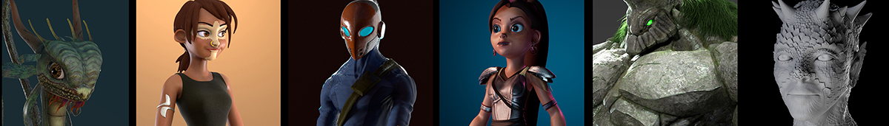

ENGLISH:
I am Esteban Campos Polo, a graphic designer and advertising professional with more than 20 years of experience. Throughout my career, I have had the luck to work in various sectors, from metal and fashion to retail and toys, collaborating with national brands and franchises. Each project has been an opportunity to learn, improve, and leave my mark, always aiming for the highest possible quality in the final work.
I had the opportunity to get involved in product and social photography, art direction, and prepress, which taught me to complete projects with care and attention to detail, ensuring everything was ready for production, whether digital or print. I learned to work with tools such as Photoshop, Illustrator, and InDesign, and to adapt to different workflows and operating systems..
My passion for character design led me to train at Animum Creativity Advanced School, specializing in 3D modeling for film and video games. There, I learned everything from stylized and realistic sculpting to retopology, PBR texturing, UV mapping, and rendering with Arnold, as well as optimization for real-time engines like Unity 3D. Thanks to the guidance of great professionals, I was able to become a finalist in The Rookies 2023 Draft, an achievement that still fills me with pride.
Today, I combine my experience in graphic design and advertising with 3D modeling to offer complete creative solutions. I like to approach each project with commitment and enthusiasm, whether helping a brand stand out or creating characters that convey emotion and personality.
Enjoy my portfolio, and if you want to work with me, the "Contact" section is open for you to write anytime.
I am open to hiring, paid collaborations and advice.
ESPAÑOL:
Soy Esteban Campos Polo, diseñador gráfico publicitario con más de 20 años de experiencia. A lo largo de mi carrera he tenido la suerte de trabajar en distintos sectores, desde metal y moda hasta retail y juguetes, colaborando con marcas nacionales y franquicias. Cada proyecto ha sido una oportunidad para aprender, mejorar y dejar mi huella, siempre buscando que el trabajo final cumpla con la mayor calidad posible..
Tuve la oportunidad de involucrarme en fotografía de producto, social, dirección de arte y preimpresión, lo que me enseñó a cerrar proyectos con detalle y cuidado, asegurando que todo estuviera listo para producción, ya sea en digital o en papel. Aprendí a manejar herramientas como Photoshop, Illustrator e InDesign, y a adaptarme a distintos flujos de trabajo y sistemas operativos.
Mi pasión por el diseño de personajes me llevó a formarme en Animum Creativity Advanced School, especializándome en modelado 3D para cine y videojuegos. Allí aprendí desde el esculpido estilizado y realista hasta retopología, texturizado PBR, mapeado UV y renderizado con Arnold, además de optimización para motores en tiempo real como Unity 3D. Gracias a la guía de grandes profesionales, conseguí llegar a ser finalista en The Rookies 2023 Draft, un reconocimiento que todavía me llena de orgullo.
Hoy combino mi experiencia en diseño gráfico y publicidad con el modelado 3D para ofrecer soluciones creativas completas. Me gusta asumir cada proyecto con compromiso y entusiasmo, ya sea ayudando a una marca a destacarse o creando personajes que transmitan emociones y personalidad.
Disfruta de mi portfolio y, si quieres contar conmigo, la sección "Contacta" está abierta para que escribas cuando quieras.
Estoy abierto a contratación, colaboraciones remuneradas y asesoramiento.